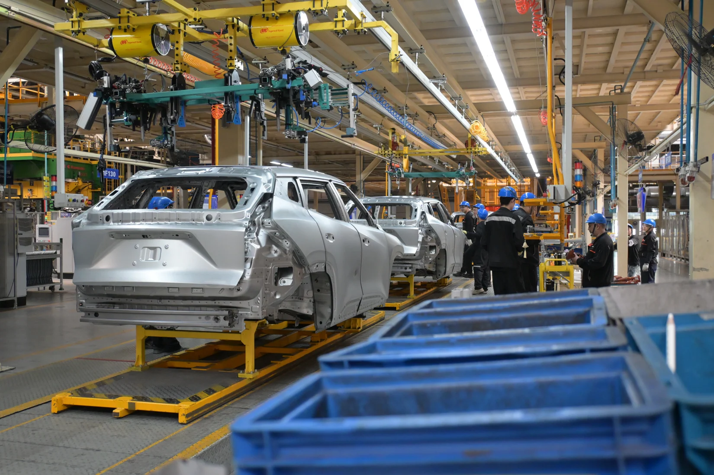
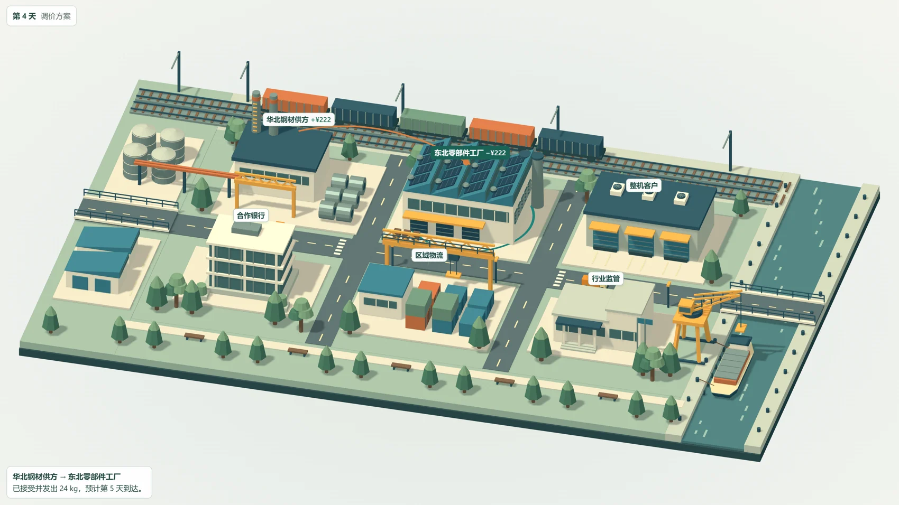
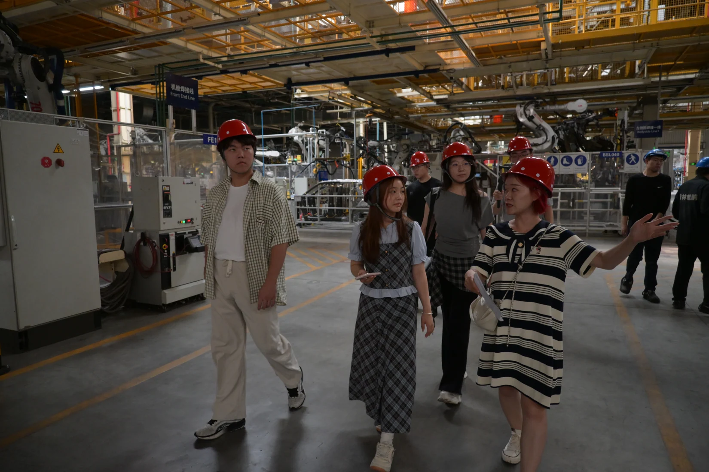

对外经济贸易大学国际关系学院实践队：在京哈一线读懂中国智造
跟随队员走进北京和哈尔滨，听智库研究者谈产业开放，看汽车工厂与医疗装备企业怎样把技术用到生产现场。
 智启新程实践队
智启新程实践队

跟随队员走进北京和哈尔滨，听智库研究者谈产业开放，看汽车工厂与医疗装备企业怎样把技术用到生产现场。
从中关村到亦庄，再到哈尔滨的制造车间。这篇行程报道串起座谈和走访，记录队员如何沿着一条产业链追问技术、生产与市场的关系。
名单发布后，工业智能体开发和智慧供应链建设成为工厂培育的具体任务。

《智行记》记下走访时的发现，《向“新”而谈》带着问题找专家，《制造关键词》把访谈中的概念讲清楚，再带回现场对照。
在现场发现问题。跟着队员从极狐门店走进整车工厂，同一辆车，在销售端和生产线上会遇到哪些不同的问题？行程里的这些观察，也是我们带进访谈的第一批问题。
阅读北京调研微信原文 ↗向受访者追问。加工前，哪些环节可以先模拟？带着走访中的疑问，听陈新松谈航空增材制造的验证，也听姚驰谈工业智能体落地时需要怎样的业务知识。访谈里的专业词，再交给《制造关键词》展开。
走进陈新松的访谈 →把概念讲明白。数字孪生、柔性制造、智能检测，这些词放回车间里各指什么？从访谈中挑出一个概念，用一段工序或一个订单变化讲清它，再回到《智行记》里的现场看它怎样发生。
回到汽车生产现场 →每日 Vlog 跟拍行程，访谈精华保留人物声音，实践纪实片《向新》串起两地的走访。

 07.20与陈新松谈航空增材制造
07.20与陈新松谈航空增材制造 07.25走进小米汽车超级工厂
07.25走进小米汽车超级工厂